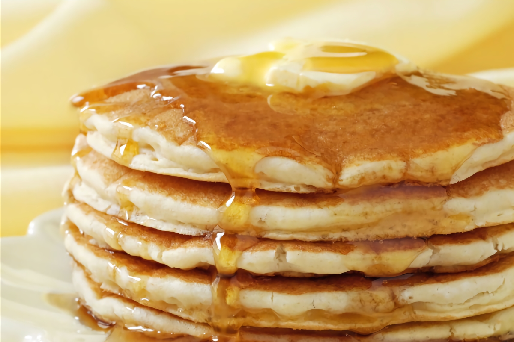
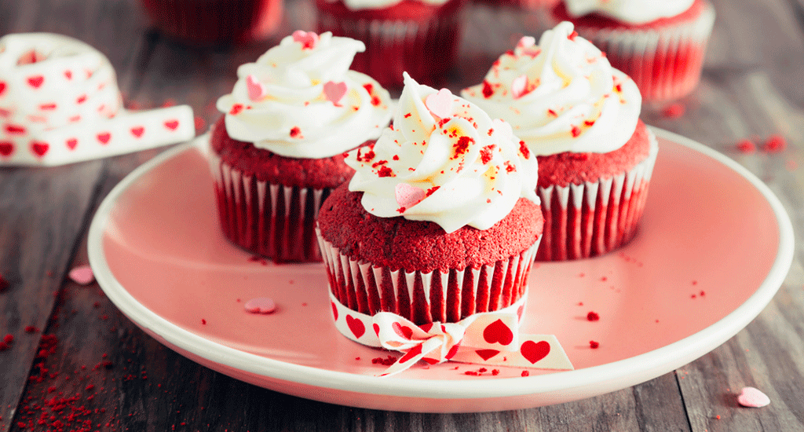
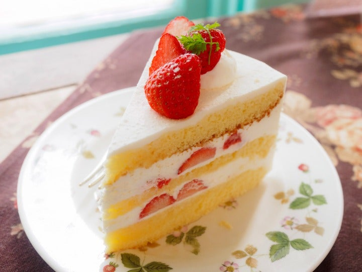
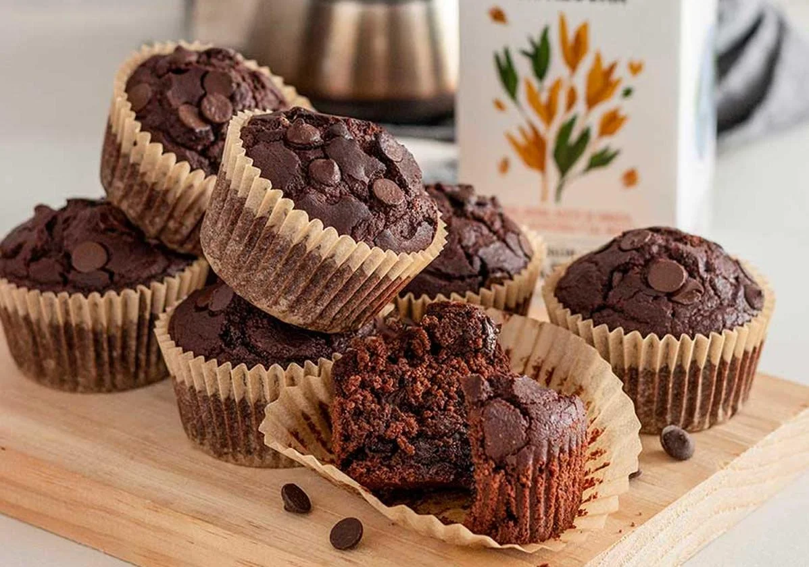
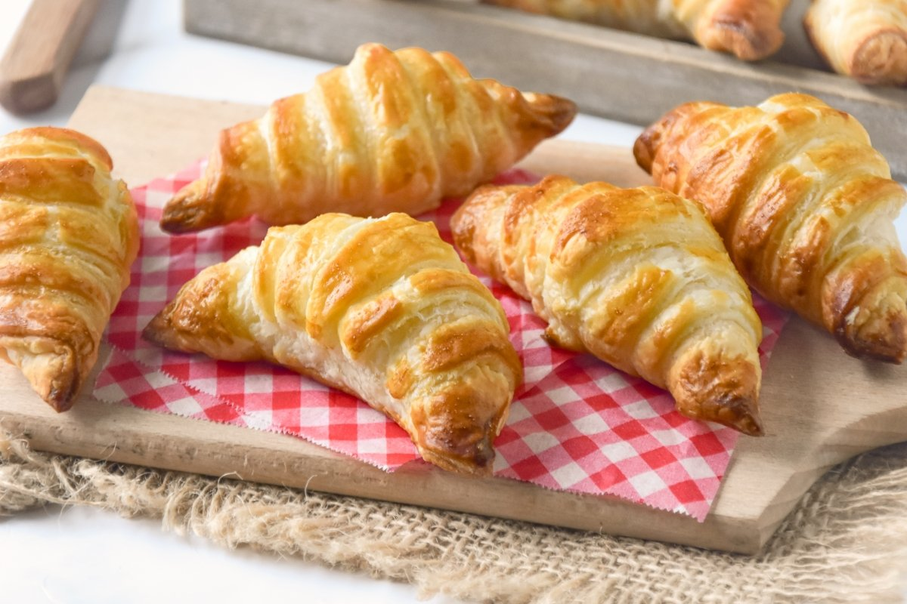
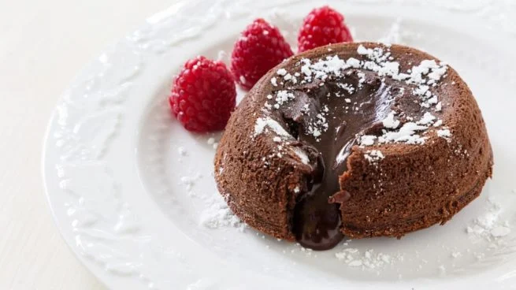

Recetas 🍩✨

Pancakes
Ver receta

Cupcakes Red Velvet
Ver recetaCookies
Ver receta

Pastel de Fresas
Ver receta

Muffins de chocolate
Ver receta
Tarta de queso de la viña
Ver receta

Croissants
Ver receta
